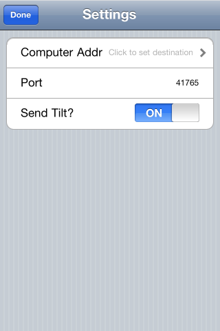
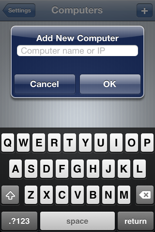
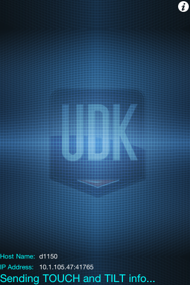
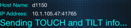

UDN
Search public documentation:
UDKRemoteKR
English Translation
日本語訳
中国翻译
Interested in the Unreal Engine?
Visit the Unreal Technology site.
Looking for jobs and company info?
Check out the Epic games site.
Questions about support via UDN?
Contact the UDN Staff
日本語訳
中国翻译
Interested in the Unreal Engine?
Visit the Unreal Technology site.
Looking for jobs and company info?
Check out the Epic games site.
Questions about support via UDN?
Contact the UDN Staff
UDK Remote
문서 변경내역: Josh Adams 작성. Jeff Wilson 수정. 홍성진 번역.
개요
설치
셋업
네트워크
UDK Remote는 PC와의 통신에 네트워킹을 사용하기에, PC와 동일한 네트워크에 있도록 iOS 디바이스에서 Wifi 셋업을 해 줘야 할 수도 있습니다. 필요한 경우 네트워크 관리자와 상의하세요.UDK Remote 설정
UDK Remote를 처음 실행하면, 바로 설정 화면으로 넘어갑니다:
(아니면 그냥 i 버튼 을 클릭하면 설정으로 갑니다.)
첫째줄을 클릭하여 PC의 주소나 이름을 입력합니다:
을 클릭하면 설정으로 갑니다.)
첫째줄을 클릭하여 PC의 주소나 이름을 입력합니다:

처음 컴퓨터를 선택할 때, 자동으로 PC의 네트워크 이름이나 IP 주소를 넣으라고 합니다. 컴퓨터 이름(, 예를 들어 mycomputer, mycomputer.company.net)이나 PC의 IP주소(, 예를 들어 192.168.0.34)를 입력합니다. OK를 클릭, 그리고서 맨 위의 세팅 버튼 또는 목록의 컴퓨터 이름입니다. 이 시점에서 셋업이 다 됐으니, 맨 위의 Done을 클릭하고 메인 UDK Remote 화면으로 돌아갑니다:
(IP 주소가 아닌) 네트워크 이름을 입력한 경우, IP 주소로의 변환을 시도합니다. 좌하단에서 결과를 확인할 수 있습니다:
네트워크 이름을 찾을 수 없는 경우, 이렇게 뜹니다: 그러면 i 버튼을 통해 세팅으로 돌아간 다음 컴퓨터 이름을 새로 추가해 줘야 합니다. 세팅 화면에서 맨윗줄을 다시 클릭하고, 컴퓨터 선택 모드로 들어간 다음, + 버튼을 클릭하여 새 컴퓨터를 추가합니다. Edit 를 사용하여 예전 또는 작동하지 않는 컴퓨터를 지울 수 있습니다.
주: IP 주소를 입력한 경우, 접속 확인을 위한 주소 분석을 시도하지 않습니다. UDK Remote는 연결없는 모델을 사용하며, 현재로서는 IP 주소를 사용할 때 UDK Remote가 PC로 데이터를 전송할 수 있는지 알아볼 수 있는 방법이 없습니다.
그러면 i 버튼을 통해 세팅으로 돌아간 다음 컴퓨터 이름을 새로 추가해 줘야 합니다. 세팅 화면에서 맨윗줄을 다시 클릭하고, 컴퓨터 선택 모드로 들어간 다음, + 버튼을 클릭하여 새 컴퓨터를 추가합니다. Edit 를 사용하여 예전 또는 작동하지 않는 컴퓨터를 지울 수 있습니다.
주: IP 주소를 입력한 경우, 접속 확인을 위한 주소 분석을 시도하지 않습니다. UDK Remote는 연결없는 모델을 사용하며, 현재로서는 IP 주소를 사용할 때 UDK Remote가 PC로 데이터를 전송할 수 있는지 알아볼 수 있는 방법이 없습니다.
PC 셋업
PC에서 멀티터치 및 틸트 정보를 사용하기 위해서는, UDK 게임을 모바일 프리뷰어 모드로 실행해야 합니다. 두 가지 방법으로 가능합니다. 언리얼 에디터에서 모바일 프리뷰어 버튼을 클릭합니다: 아니면 -simmobile 옵션을 주고 게임을 실행합니다. 렌더링 이뮬레이션은 물론 입력 이뮬레이션도 켭니다. (Direct3D)로 일반 PC 렌더링을 사용하려는 경우에도, 명령줄에 -simmobileinput 옵션으로 게임을 실행시키면 UDK Remote로부터 입력을 계속 받을 수 있습니다.
아니면 -simmobile 옵션을 주고 게임을 실행합니다. 렌더링 이뮬레이션은 물론 입력 이뮬레이션도 켭니다. (Direct3D)로 일반 PC 렌더링을 사용하려는 경우에도, 명령줄에 -simmobileinput 옵션으로 게임을 실행시키면 UDK Remote로부터 입력을 계속 받을 수 있습니다.